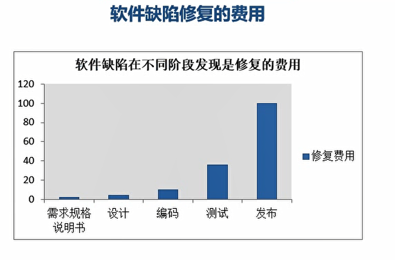

软件缺陷
定义
- 从内部看，软件缺陷试产品开发或者维护过程中存在的错误、毛病等各种问题
从外部看，软件缺陷是系统所需要实现的某种功能的失效或者违背
总的来说，缺陷就是问题，最终表现为所需要的功能没有完全实现，没有满足用户的需求。
具体包含（程序、数据、文档）
- 未达到需求规格说明书中的功能
- 出现了需求规格说明数中指名不会出现的错误
- 功能超出了需求规格说明书的范围
- 未达到需求规格说明书中虽然没有指明，但应该达到的目标
- 测试人员或者用户认为软件难以理解、不易使用、运行速度慢或者最终用户认为不好
表现形式
- 功能、特性没有实现或者部分实现
- 设计不合理，功能特性不明确，逻辑不清楚或者存在矛盾
- 产品实际结果和所期望的结果不一致
- 没有达到需求规格说明书所规定的性能指标
- 运行出错，中断、奔溃、界面混乱
- 数据不正确、精度不够，不完整，格式不统一
- 用户不能接受的其他问题，超时、界面丑陋
- 硬件或者系统软件上存在的其他问题
缺陷产生的原因
缺陷不可避免，主要原因如下
- 需求解释或者记录错误
- 用户需求定义错误
- 需求说明存在错误
- 编码说明、程序代码有无
- 硬件或者系统存在错误
- 文档错误、内容不正确、拼写错误
缺陷产生的根源
- 交流不充分
- 软件的复杂性
- 开发任务的错误
- 需求的变化
- 进度压力
缺陷的修复费用
